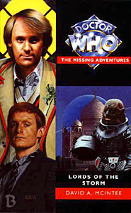

|
Lords of the Storm
|
BASIC PLOT DOCTOR COMPANIONS MATERIALISATION CIRCUIT PREPARATORY READING CONTINUITY REFERENCES Pg 8 A member of the Agni staff is called Noonian, as in Noonian Soong. The Star Trek references in the MAs go on and on. Pg 9 "His superior's features - the rotten-wood shade of the Jingo clan - were inscrutable" Presumably Commander Jingo Linx from The Time Warrior was also from this clan. Jingo, meaning fanatical patriotism, is an incredibly apposite first name for a Sontaran. Pg 15 "If Nur was going to be Rani after him." This is not Rani in the traditional Who sense, but in its original meaning as Queen in the Indian language. Presumably this is why the Who Rani chose the name. Pg 22 "A hand on the end of a sleeve of a red-trimmed white cricketing jersey emerged from under the hexagonal apparatus. 'Finkle-groober.'" The Invasion of Time featured a Winklegruber (the spelling is uncertain) but presumably the two implements are related. Turlough contemplates the aftereffects of Tegan's departure from the TARDIS crew, as seen in Resurrection of the Daleks. Pg 23 "What with the Daleks' time corridor, I still haven't had the chance to make sure that the spatial distribution caused by the Gravis and his drones has left no permanent damage." Resurrection of the Daleks and Frontios respectively. Pg 24 "'That's in Tzun space,' he exclaimed after a moment. 'Nobody in their right mind goes their voluntarily!' 'Not any more. They were wiped out by the Veltrochni in the 2170s'" The Tzun first appeared in McIntee's First Frontier and reappeared in Mission: Impractical and (unnamed) in Bullet Time. The Veltrochni appeared in The Dark Path and Mission: Impractical. Turlough glances through the TARDIS data bank, seen in Castrovalva as the Index File. Pg 29 "I don't really relish the prospect of being tied down into the Presidential throne with red tape." The Doctor accidentally became President of the Time Lords is The Five Doctors. He has been deposed by the time of Trial of a Time Lord. Pg 31 "Having seen what the Doctor's restaurant ended up like, he certainly didn't want to encourage the Time Lord's culinary ambitions" This is presumably The Crystal Bucephalus, as Turlough never experienced the Tempus Fugit, the restaurant the Doctor created during that story, and which was, incidentally, hugely successful. Pgs 31-32 "The Doctor breezed casually into the villa, having abandoned his frock coat and found a short-sleeved version of his question-mark shirt" He also wore this in Planet of Fire. Pg 32 "'I thought that while we were in dry dock, so to speak, it's about time I saw to the chameleon circuit...'" He should know better. He failed to fix it in very different ways in Logopolis and Attack of the Cybermen. Pg 48 "Turlough hadn't seen anything like it either, though perhaps he might have if he hadn't been trapped on Earth for half of his education." Mawdryn Undead, Planet of Fire. Pg 53 "'We sell airavata to Spinward, for example'" The Spinward corporation are active in Deceit. Pg 69 "'Not just any Doctor,' Turlough corrected her. 'He's also President of Gallifrey.'" The Five Doctors again. Pg 70 "Those irritating Earthers he'd shared his exile with would doubtless be amused." Mawdryn Undead. Pg 77 "Turlough didn't recall much from the Academy before his exile, but basic astrography was drummed into every member of the Imperial families from the day they were old enough to open their eyes." Turlough's background on Trion again, from Planet of Fire. Pg 97 "He half-expected to see an augmented Ph'Sor Tzun." First Frontier, Mission: Impractical and Bullet Time again. Pg 98 "He had never seen these creatures before, but knew what they were all too well from lessons at the Imperial Academy before his learning was afflicted with the more parochial, yet perversely more complex, terrestrial Modern Studies at Brendon." Planet of Fire, Mawdryn Undead. Pg 114 "Everyone in the service knew that space pirates, as popularly conceived, didn't exist." Would that the same were true of The Space Pirates. Pg 116 "'Brave hea-' The Doctor sighed. 'Chin up.' The Doctor said 'Brave heart' to Tegan a lot. But she's gone now. Resurrection of the Daleks. "The cricket ball flashed down the length of the corridor in the blink of an eye, punching into the back of the Sontaran's collar and ricocheting away." The Doctor's prowess with a Cricket ball is also relevant in Black Orchid and Goth Opera, and life-savingly so in Four to Doomsday. Pg 117 "Probic vent. It's the Sontarans' only physical weak point." As seen in The Time Warrior. Pg 121 "'One wore pale clothes. I think the other was a female.' How was he supposed to tell? He wasn't a biologist." The Sontarans' inability to distinguish human gender types also occurs in The Time Warrior. Pg 124 "It's standard Sontaran procedure to subject captives to a repeated ocular stimulus focusing neuronic activity in the brain centres that control autonomous function." Linx did this in The Time Warrior. Pg 127 "Nonetheless, he was actually glad that none of the genetically engineered, five-digited Intelligence operatives had accompanied their team." This explains the different appearance of Styre in The Sontaran Experiment to all other Sontarans. That said, a different explanation is given in The Infinity Doctors. Pg 136 "'Then they must be using their own system, an osmic projector.'" As Linx did in The Time Warrior. Pg 151 A Linx-class cruiser appears. Apparently, the Sontarans name their warship types after great war heroes. Presumably they didn't dwell too much on the fact that Linx was killed by a thirteenth century earthling using a chunk of wood, then. Pg 152 Fleet-Marshall Stentor is of the Sontaran Grand Strategic Council. It was established that this was the form of governance for Sontarans in The Sontaran Experiment. Pg 157 "'When we run into Jahangir, all we have to do is hold him long enough to decondition him.' The Doctor pointed his own torch at them, flashing it on and off in a rapid but steady sequence of four long and three short, over and over." This form of deconditioning is also used in The Time Warrior. And by Data in The Star Trek: The Next Generation episode 'The Game.' Also see Continuity Cock-Ups. Pgs 174-175 show the Sontarans watching The Invasion of Time for fun. Pg 175 has them quickly changing channels (perhaps embarrassed), but The Time Warrior is running on the new one. They then shift over to showing the Second Doctor segments of The Two Doctors. See also Continuity Cock-Ups. This entire sequence is very reminiscent of the Cybermen watching their past encounters with the Doctor in Earthshock. Pg 176 "As we have known since Marshal Stike's abortive stratagem four centuries ago." The Two Doctors. Pg 181 "Tell them to bring grenades filled with coronic acid; that's about the only thing that gets through Sontaran space armour." As we found out in The Two Doctors. Pg 187 "Hanging on for dear life, he poured the brandy down the Sontaran's probic vent..." Again, the probic vent causes problems, as noted in The Time Warrior. You'd think that, over the millennia, the Sontarans would have developed some sort of protection for this vulnerable area - a Sontaran equivalent of the box in sports games that covers the testicles - since it seems to be so much of a disadvantage, as this book just keeps on proving. Pg 190 "As a matter of fact, the Arcalian exobiologist Crahin on Gallifrey has speculated that, since the Sontarans are a genetically engineered species, they may have been created with the express purpose of keeping down the Rutan population." This is a lovely theory. The Arcalians are one of the Chapters on Gallifrey, as established in The Deadly Assassin. Pg 197 "Could we get a message to Kamelion? He might be able to fly the TARDIS back here." Hey, well remembered! There is another member of the TARDIS crew! Not that he's any use here, of course. Kamelion appeared in The King's Demons, The Crystal Bucephalus, Imperial Moon and Planet of Fire, wherein he is brutally murdered by the Doctor. But he was back in The Ultimate Treasure, so that's all right. "Turlough didn't like sounding pessimistic." Really!? Since when? This is about as far away from Turlough's characterization as it's possible to get without actually changing his name. To be fair, I have yet to see Turlough pinned down well in print, possibly because his character is so badly defined in the televised stories, no matter how much Strickson was trying. Pg 198 "The Doctor patted his pockets anxiously, then grimaced. 'I'll never forgive those Terileptils for that. Sontaran robots are vulnerable to high-frequency sound." This was proved in The Sontaran Experiment. The Doctor is hunting for his Sonic Screwdriver, destroyed by a Terileptil in The Visitation. Pg 201 Turlough thinks about his past again, from Planet of Fire. "'It was formed after the Dalek invasion; Earth, Centauri, the Cyrennhics.'" The Dalek Invasion of Earth. Alpha Centuarians appeared in all the Peladon stories. The Cyrennhics is an uncertain reference. Pg 204 The Doctor gets to say 'Resistance is useless.' He must enjoy impersonating the Cyberleader. Pg 208 "'Leela and I had some trouble with them [the Veltrochni] on Mimosa II'" But not in any adventure we've seen they didn't. Pg 215 "'We found a derelict Stormblade in a trans-solar orbit in the Reticuli system." The Reticuli system is one of the great cliches of science-fiction, with The X-Files often coining the Zeta Reticuli aliens as the standard greys of Abduction folklore. Bizarrely, the system has never been visited in Doctor Who. "'We crashed it into the Rutan dry-dock on the moon of Betelgeuse V.'" Similarly, Betelgeuse, staple of The Hitch-Hikers Guide to the Galaxy, barely appears in Who, and only in stories written or script edited by Douglas Adams: Destiny of the Daleks and Shada. On neither occasion is it visited. Pg 216 "The Doctor threw him a mock-reproachful look. 'Would I do that [lie, in essence] to you?' 'If your file is accurate, you'd do that to your own president.' 'Not necessarily, he's a terribly endearing chap. Perhaps your file is a little outdated?'" Indeed it is: The Doctor is currently the Gallifreyan President, as of The Five Doctors. Pg 223 "As you see, this sector is rich in the mineral terullian." The Sontarans' need for terullian was established in The Sontaran Experiment. Pg 225 "'Or perhaps we should conquer Gallifrey to begin with.' 'You've tried before.' 'We have?' He frowned, then snorted derisively. 'A mere exploratory expedition.' He waved the thought away dismissively." This is simulataneously a Sontaran excuse for the spectacular failure of their invasion in The Invasion of Time, as well as being an excuse for how badly that story was plotted, and how low the budget was by the end of the season. Pg 241 "They were unsure whether the Time Lord's words were true, but they were aware that the Sontarans had tried to conquer them before." The Invasion of Time. Pg 246 "'Our species need something a little more particular.' The first heat form of the Time Lord said. 'I think we'll call you Fred, for ease of reference.'" This moniker, which the Rutans embrace with alarming alacrity, was first used for Romana I in The Ribos Operation, and would later be used by the Doctor to describe the evil Artificial Intelligence in Transit. Pg 249 "We are riders on the storm, and lords of it." Nice line. Riders on the Storm is the title of a song by The Doors. Pg 259 The information accidentally downloaded into the Sontaran Mainframe computer will have repercussions in Shakedown. Pg 262 "Turlough, have you still got that TARDIS homing beacon I gave you when we first met?" Mawdryn Undead. Incredibly, Turlough happens to have it on his person. Like a set of keys that you move from pocket to pocket as you change your trousers, I suppose. Pg 263 Karne having been disguised as a Sontaran for 30 years, as revealed here, sounds like a continuity error, but it's not. Admittedly, Lo states that he and Karne have worked together for 10 years on pg 9, but they were presumably on different assignments for the 20 years before that. Pg 276 "They will be back eventually, and the Sontarans will get their terullian, but not until around the time of the Solar flares. About thirteen thousand years in the future." The Sontaran Experiment. Pg 278 "'You sound as if you approve.' 'Of his leaving his people to become a wanderer on the edge of life? Who am I to cast stones?'" The Doctor's reason for leaving Gallifrey. Pg 278-279 Karne is still alive, leading us neatly into Shakedown. OLD FRIENDS AND OLD ENEMIES The Rutan NEW FRIENDS AND NEW ENEMIES Major Karne is a Sontaran for almost the whole book. He will reappear in Shakedown. Other Sontarans include General Skelp, Commander Vulg, General Kragg and Fleet Marshall Stentor. Raja Ambika Karan Pratapsinh and his daughter, Nur. Captain Sharma of the Naghi. Jahangir of the Medical Corpus on Raghi.
CONTINUITY COCK-UPS PLUGGING THE HOLES [Fan-wank theorizing of how to fix continuity cock-ups] FEATURED ALIEN RACES The Rutan (which is both the singular and the plural of the race) FEATURED LOCATIONS Agni, the third moon of Indra, 2370AD. The city of Kuru on Raghi, the sixth moon of Indra, in the Unukalhai system, Alpha Serpens Caput, formerly Tzun space, 2371AD Two ships: The Garuda and the Nandi In orbit around Lambda Serpens Caput In orbit around Raghi The Antares system IN SUMMARY - Anthony Wilson |
|
 |